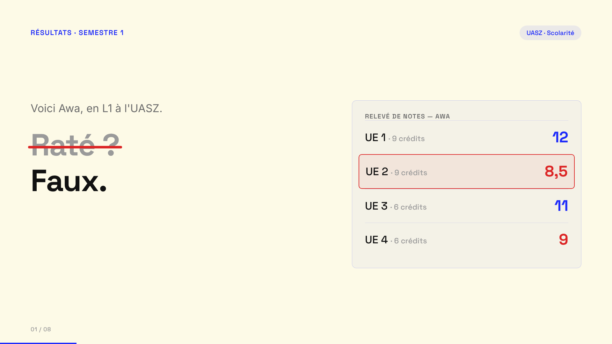
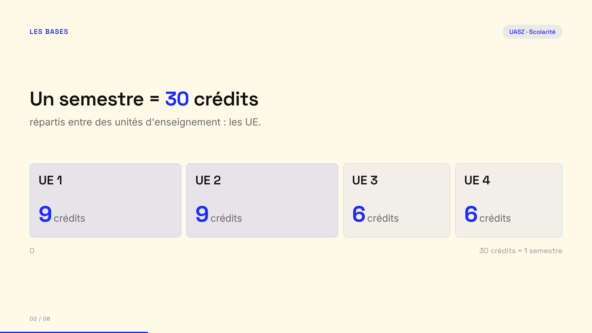
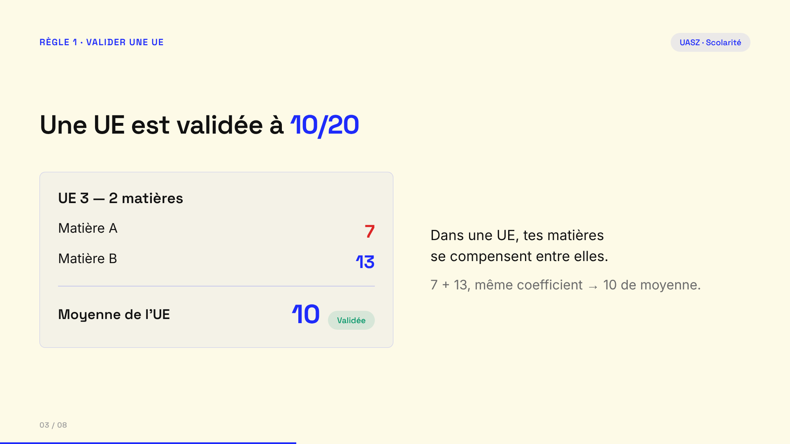
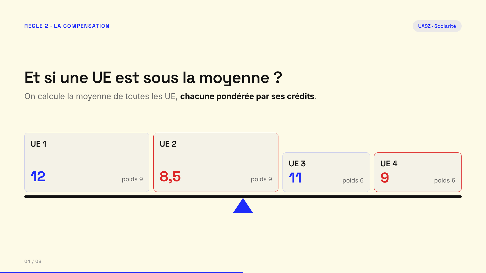
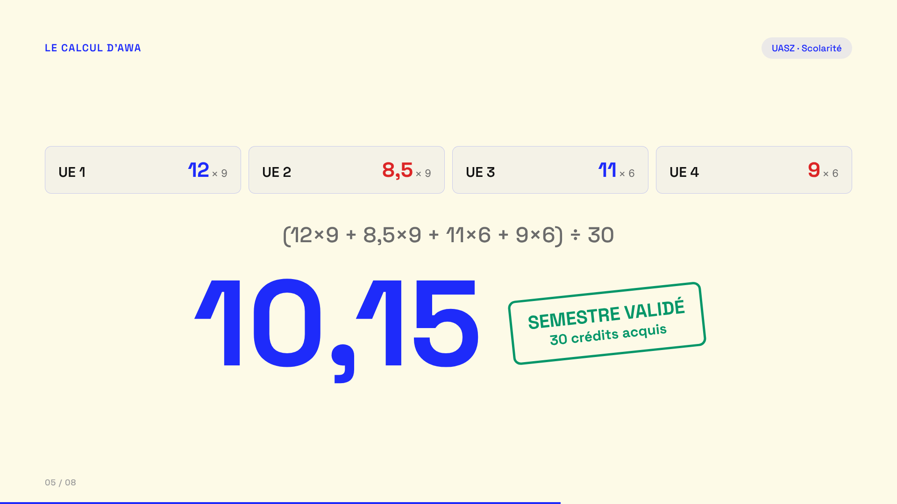
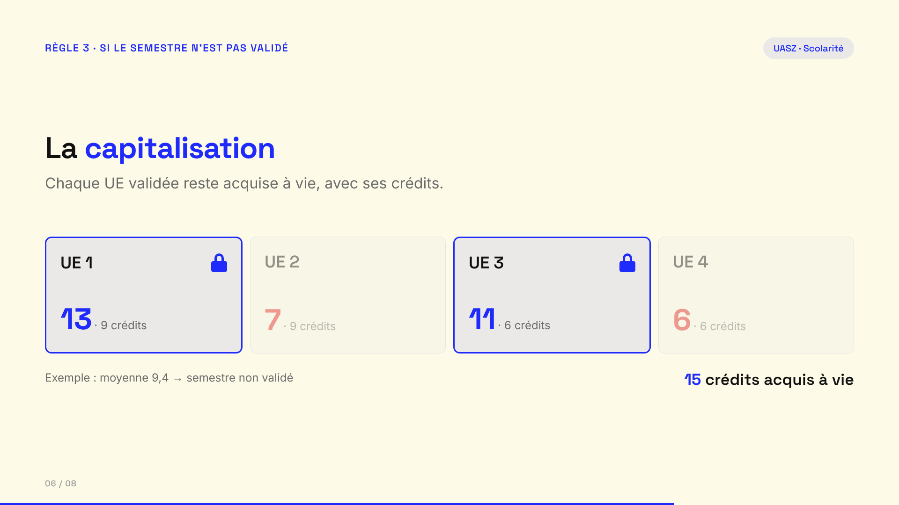
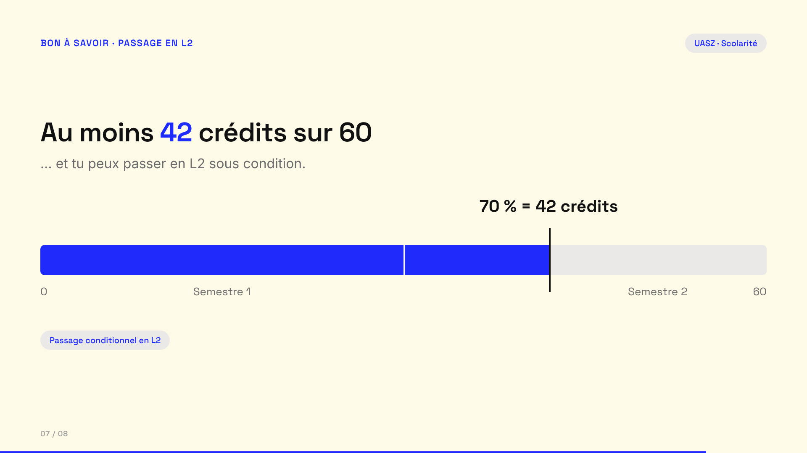
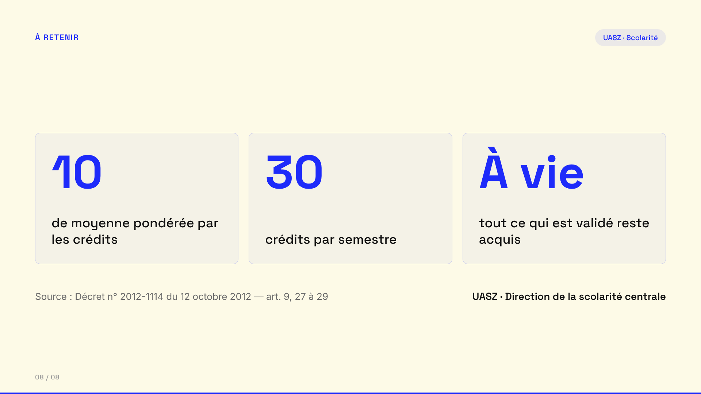

Comment valider ton semestre — Storyboard
Capsule UASZ · L1 · 16:9 · esquisses statiques (sans animation) pour valider la mise en page.

01: Le faux échec
0 à 10s
Le relevé d'Awa ; le 8,5 en rouge ; « Raté ? » barré → « Faux. »

02: UE et crédits
10 à 20s
La barre de 30 crédits découpée en 4 UE (9 · 9 · 6 · 6).

03: Valider une UE
20 à 30s
Seuil 10/20 ; matières 7 et 13 → moyenne 10, UE validée.

04: La compensation entre UE
30 à 42s
Les 4 UE sur une balance, chacune pesant ses crédits.

05: Le calcul d'Awa
42 à 53s
Calcul terme à terme, compteur jusqu'à 10,15, tampon « Semestre validé ».

06: La capitalisation
53 à 63s
Exemple non validé : les UE ≥ 10 se verrouillent, 15 crédits acquis à vie.

07: Passer en L2
63 à 72s
Jauge 60 crédits, repère 70 % = 42 crédits → passage conditionnel.

08: À retenir
72 à 82s
3 repères + source : Décret n° 2012-1114, art. 9, 27–29.